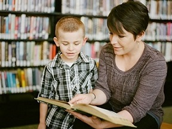

Inscripciones abiertas
Ya se encuentran abiertas las inscripciones para el ciclo lectivo 2024. Para realizar dicha inscripción es necesario presentar toda la documentación necesaria ... Leer más.
Somos un instituto educativo de nivel primario que tiene como objetivo principal brindar un espacio educativo, social y cultural en el que los niños puedan desarrollar habilidades intelectuales e interpersonales a través de las diferentes clases y propuestas extra-aúlicas a cargo de nuestros docentes y profesionales de la educación. Contamos además con un equipo interdisciplinario de tutores y otros profesionales, capaces de orientar a los niños con diferentes necesidades y formas de aprender.
Untref School es un lugar donde los niños aprenden habilidades básicas de lectura, escritura y Matemáticas. También aprenden sobre el mundo que los rodea, incluyendo Ciencias, Historia y Geografía. Junto a sus compañeros y docentes, los niños desarrollan sus habilidades sociales y interpersonales: aprenden a trabajar con otros, a resolver conflictos y a tomar decisiones. En resumen, Untref School es un lugar donde los niños aprenden a aprender y a crecer como personas.
Aprendizaje
Desafios
Compañerismo
Intercambios
Ya se encuentran abiertas las inscripciones para el ciclo lectivo 2024. Para realizar dicha inscripción es necesario presentar toda la documentación necesaria ... Leer más.
Tenemos el orgullo de darle a bienvenidas a un nuevo grupo de profesionales que a partir de la próxima semana integrarán nuestro equipo interdisciplinario ... Leer más.